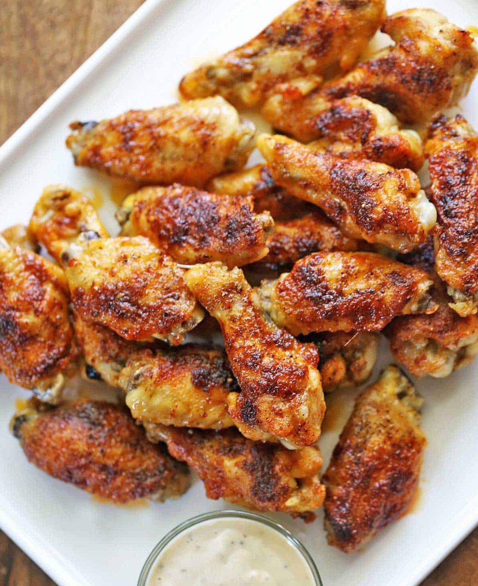

Baked Chicken Wings

Description
Baked chicken wings are easy to make, and
they come out crispy and delicious. Simply
bake them in a 400°F oven for 40 minutes.
There's no need for flour!
Ingredients
- 3 lb. chicken wings, split, tips removed
- 2 tablespoons butter, melted
- 2 teaspoons Diamond Crystal kosher salt
(if using fine salt, you might want to use less)
- ½ teaspoon black pepper
- 1 teaspoon garlic powder
- 1 teaspoon paprika (or smoked paprika)
Steps
- Preheat your oven to 400 degrees F.
Line two rimmed baking sheets with foil
and fit the baking sheets with wire racks.
- If your chicken wings are whole, cut the tips off
and separate the drumettes and the flats
(here’s a good video
that shows how to do that).
- In a large bowl, toss the chicken wings with the melted butter.
- Arrange the coated chicken wings in a single
layer on the wire racks, not touching each other.
- Sprinkle them with salt, pepper, garlic powder, and paprika.
- Bake the wings until the skin is browned and crispy, about 40 minutes.
- HIGHLY RECOMMENDED:
For extra crispy wings, bake the wings for just 30 minutes,
then leave them in the oven, lower the oven temperature to
the "keep warm" setting (170 degrees F), and keep the wings
in the oven for 30-60 more minutes.